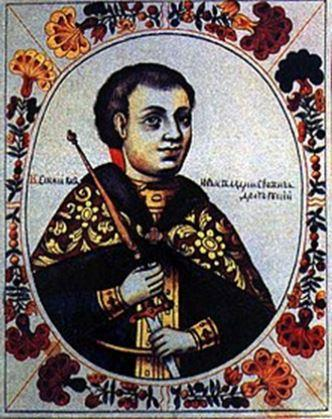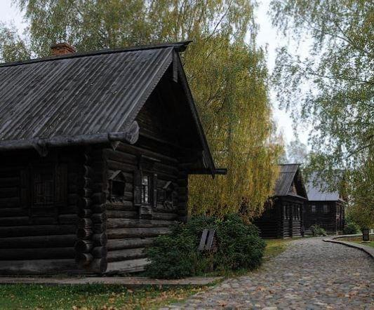Kostroma fut fondée en 1152 après J.-C., sur la confluence des fleuves Volga et Kostroma. Son fondateur fut le Prince Dolgorouki, homme clairvoyant, personnage qui joua un rôle très important au cours de la transaction politique du pouvoir de Kiev à la Principauté de Vladimir-Souzdal. Rappelons que la domination mongole sur les populations russes dura bien deux siècles. Kostroma naquit afin de sécuriser la partie nord-est de la Principauté.
Beaucoup de familles à la recherche d’une qualité de vie meilleure quittèrent les forêts alentours pour venir vivre à Kostroma. Il est presque certain que le nom de la ville dérive de la dénomination d’une fête païenne que l’on célébrait dans l’antiquité : Kostroma, précisément.
Les premiers habitants commencèrent à travailler le bois, à pêcher et à tanner les peaux. La nouvelle ville est mentionnée dans les chroniques en 1213, à cause des graves conflits entre les fils du Prince Vsevolod. Kostroma subira de nombreux ravages, mais les Tartares la détruisirent complètement. Après 1239, le Prince Iaroslav la fit reconstruire. Iaroslav fit édifier dans la ville l’Église dédiée à Saint Fiodor.
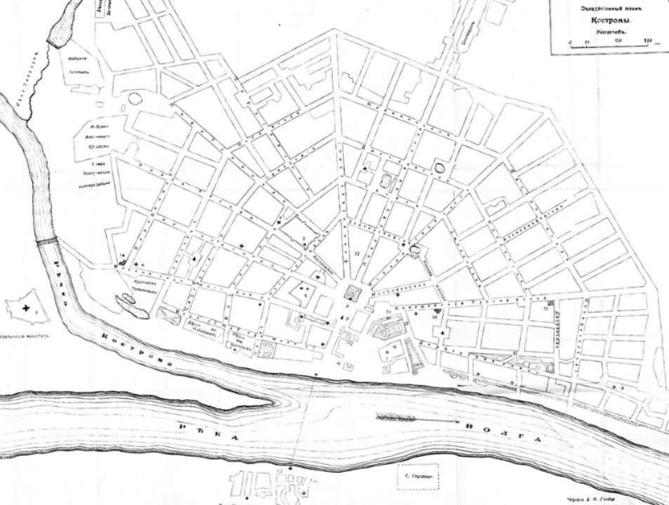
Plan ancien de Kostroma
De 1246 à 1276, avec le bon gouvernement du Prince Vassili, la ville devint florissante et puissante. Au cours de ces années on construisit des Églises et des Monastères. En 1272, le Prince Vassili gagna une bataille importante contre les Tartares. Après la mort de Vassili, Kostroma redevint une ville de province, car elle n’était pas dans une position très favorable pour les commerces, mais elle avait la charge importante et ardue d’être une ville de défense pour Moscou, qui avait été elle aussi fondée par Dolgorouki.
Un Tartare, qui s’était converti à la religion chrétienne, fit édifier dans la Ville de Kostroma, le Monastère d’Ipatiev. Sa construction commença en 1330. C’est un monastère qui revêt une grande importance pour l’histoire de la Russie ; bien d’autres monastères d’ailleurs sont importants du point de vue historique, car la vie quotidienne, l’administration de la chose publique ont toujours tiré leurs motivations et leurs idées de la vie religieuse.
Dans le Monastère d’Ipatiev, le Prince Vassili se réconcilia avec son cousin Vassili Cosoy. On découvrit dans ce lieu de culte, devenu aussi un point de référence pour la culture et l’enseignement, d’importantes Chroniques relatives au XIVème siècle, et également d’autres Chroniques plus anciennes. Ces Chroniques sont appelées Code Ipatien et représentent une source importante d’informations historiques.
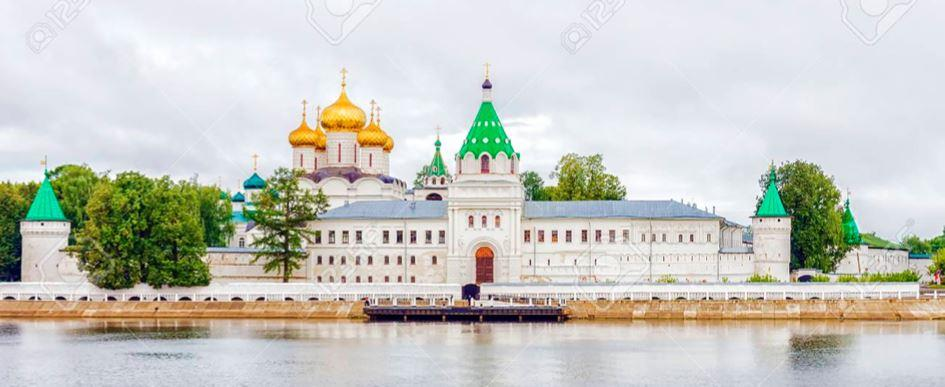Plusieurs fois, au cours des siècles, le Code Ipatien se perdit. En 1617, il fut redécouvert en Ukraine et fut recopié par des moines de Kiev en 1621. Probablement le code fut rédigé à la fin du XIIIème siècle et renferme de précieuses informations remontant au XIIème siècle. Le Code disparut à nouveau et heureusement fut retrouvé au XVIIIème siècle par l’historien russe Nikolaï Karamzine précisément dans le Monastère Ipatiev à Kostroma.
À partir de 1810, on décida de conserver ce genre de documents d’inestimable valeur dans la Bibliothèque Nationale Russe de Saint Petersbourg. La Bibliothèque fut fondée par Catherine II et contenait beaucoup de livres que la tzarine avait donnés. La Bibliothèque personnelle de Voltaire, entre autres, a une valeur particulière. Pendant la période de domination soviétique en Russie, la Bibliothèque fut préservée de toute tentative de pillage et de destruction. En 1992, la Bibliothèque est redevenue propriété de la Nation Russe. Ces informations utiles sont associées à la vie du Monastère, étant donné que le Monastère Ipatiev est profondément lié à l’Histoire de la Sainte Russie. Comme nous l’avons dit plusieurs fois dans cet article, la Russie a été l’un des rares Pays au monde, dans lequel, dès ses origines, la société, la vie politique, la religion ont coexisté en harmonie, pour une nécessité profonde d’authentique spiritualité, plus que par intérêt. Pendant la période agitée, qui comprend les années qui vont de la mort du dernier tsar de la dynastie Rurik, Fédor Ivanovitch, 1598, à l’avènement du premier tsar de la dynastie Romanov, 1613, le Monastère fut occupé par les défenseurs de l’un des nombreux imposteurs de l’époque, connu comme le faux Dimitri II. Pendant cette période la Russie fut envahie par les armées Polaco-lituaniennes et tant d’autres imposteurs, non seulement le faux Dimitri, tentèrent d’arriver au pouvoir. Le personnage de Boris Godounov se situe dans ces années de troubles.
Boris était le beau-frère de Féodor Ivanovitch. La régence, à cause des problèmes de santé de Féodor, et le règne de Boris Godunov, après la mort de Féodor, ne furent jamais totalement acceptés par l’Assemblée des boyards, des marchands, des religieux. Cette assemblée, appelée Zemsky Sobor, était une grande assemblée nationale. En mars 1613, et plus précisément le 14 mars, l’assemblée annonça la proclamation du nouveau tsar : Michel Romanov. Au moment où l’Assemblée l’avait choisi pour gouverner la Russie, Michel se trouvait avec sa mère Marta dans le Monastère d’Ipatiev. Comme Michel était très jeune, sa mère refusa la nomination, car elle retenait que son fils était trop inexpérimenté pour une telle charge. Les Boyards confirmèrent leur choix, opposant au refus leur conviction : continuer à refuser aurait porté la Russie à la destruction et toute la famille de Michel aurait été responsable devant Dieu du refus de la charge. Il faut rappeler que pendant la période de troubles, la population de la Russie fut décimée, à cause de mutations climatiques inopinées, dues à l’éruption d’un volcan au Pérou.
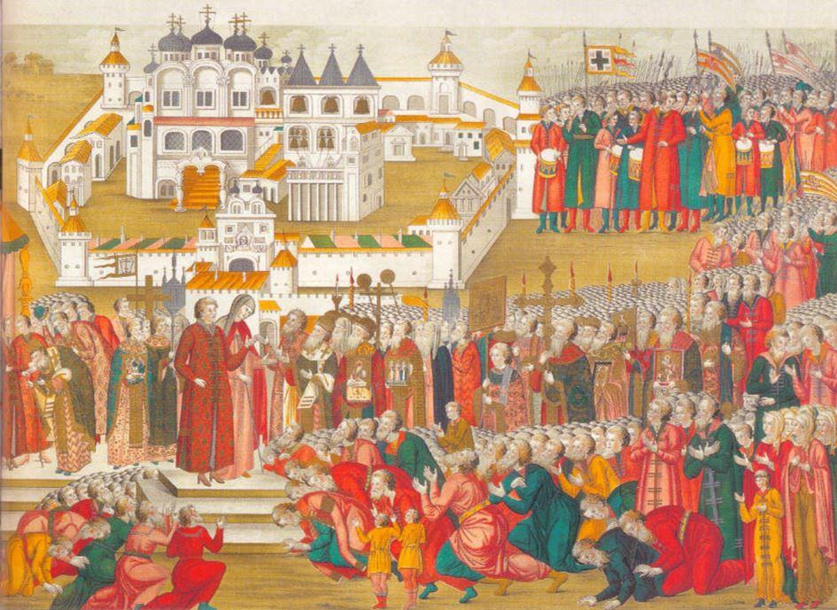
La foule, massée devant le monastère Ipatiev, implore la mère de Michel Romanov de le laisser partir pour Moscou, pour devenir tsar
Michel et sa mère acceptèrent. À cause de l’extrême pauvreté dans laquelle se trouvait le Pays, Michel attendit de nombreuses semaines, dans le Monastère de Troitsa, afin que l’on puisse trouver à Moscou un lieu pour l’accueillir lui et sa famille. Proclamé tsar par l’Assemblée populaire le 24 mars 1613, Michel fut couronné le 22 juillet de la même année dans la Cathédrale de la Sainte Dormition. Il est important de souligner que le jour du couronnement dans la cathédrale, il y avait le peuple russe. Michel portait un habit rouge pourpre. La couronne, symbole de service en regard du peuple, lui fit mise sur la tête par le Métropolite Éphraïm.
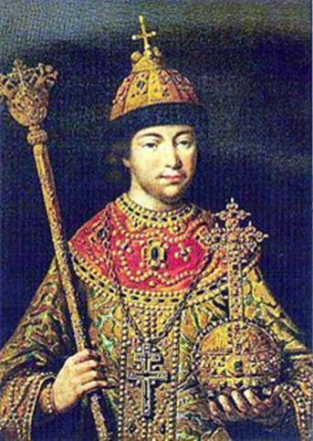Dans ses mains, le spectre et le globe. Michel se recueillit en prière devant l’autel et parla avec les gens des graves problèmes qui affligeaient le pays. Il fut oint par le Métropolite et accepta le Sacrement du Corps et du Sang du Christ. Éphraïm lui rappela ses devoirs : protéger le Pays et l’Église Orthodoxe. Michel lut une prière pour le peuple russe et une autre pour lui et sa famille. Il faut réfléchir sur ces mots que souvent les historiens utilisent : « La cérémonie prit fin et commença son règne ».
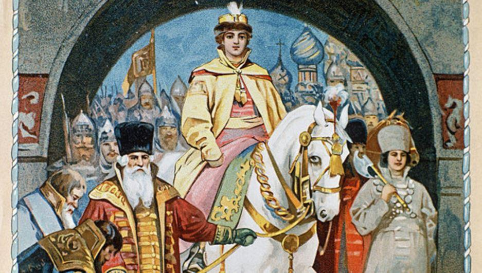Cette phrase nous transmet toute la simplicité et l’authenticité de la cérémonie du couronnement et c’est le programme de la famille Romanov : peu d’évènements de palais et beaucoup de travail au service du Pays. Les palais et les fastes qui par la suite entourèrent les Romanov sont en grande partie diplomatiques, une adaptation aux cours européennes qui les définissaient comme des « sauvages et des bûcherons ». Pierre Ier, qui fit construire tant de magnifiques palais et fonda la ville de Saint Pétersbourg, se rendit en Hollande pour apprendre le métier de charpentier et souvent travailla come tel avec les autres ouvriers. Nous trouvons un grand nombre de Saints chez les Romanov, certains d’entre eux ont même été reconnus par l’Église catholique. Alexandre Ier, qui a le mérite d’avoir arrêté la fureur napoléonienne, passa les dernières années de sa vie comme pèlerin errant. Rappelons que c’est Alexandre Ier, qui eut l’idée de la Sainte Alliance. Dans un monde aussi matérialiste comme celui d’aujourd’hui, le mot « Saint » pourrait gêner beaucoup de gens. Si on lit le document qu’écrivit Alexandre Ier et qu’on l’analyse sans idées préconçues, on se rend compte combien ce fut la proposition la plus sensée pour une Europe unie et pour un monde meilleur.
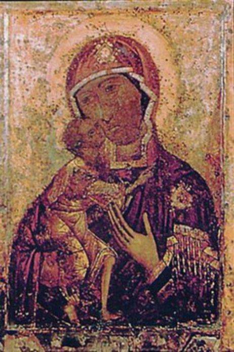Le premier tsar Romanov fut béni par sa mère Marta avec l’Icône « Notre Dame de Saint Théodore ». Le vrai nom de Marta était Ksenija Ivanovna Sestova ; elle fut obligée de changer de nom pendant la période des troubles. Boris Godounov voulait réprimer tous les Romanov : Marta fut contrainte aussi à prendre le voile. Le père de Michel était le fils du boyard Nikita Romanovic Zacharyn-Juriev, à son tour fils de Roman Jurievic, fondateur de la dynastie des Romanov. Fédor Nikitic, ainsi que sa femme Ksenja, fut contrainte par Boris Godounov à se retirer dans un couvent. Fédor prit le nom de Filarete et entra au Monastère d’Antoniev. Filarete fut outragé et insulté, En 1605, le faux Dimitri Ier renversa les Godounov et nomma Filarete Métropolite de Rostov. Le Faux Dimitri II le proclama Patriarche de toute la Russie.
De 1610 à 1618, il fut prisonnier du Roi polonais Sigismond Vasa. Il fut libéré le 13 février 1619, à la suite de la paix de Deulino. Il devint Patriarche canoniquement intronisé le 2 juin 1619. De 1619 à 1633, année de sa mort, il fut le meilleur conseiller de son fils, devenu tsar. Toutes ces informations sont utiles pour nous faire comprendre comment le début du règne des Romanov fut caractérisé par l’unité du peuple, de l’Église et des gouvernants.
Le Monastère Ipatiev représente cette unité.
Nous avons pris en considération jusqu’ici le Monastère du point de vue historique et politique. Dans ce contexte le terme « politique » prend tout son sens : grand esprit de service des gouvernants envers la population.
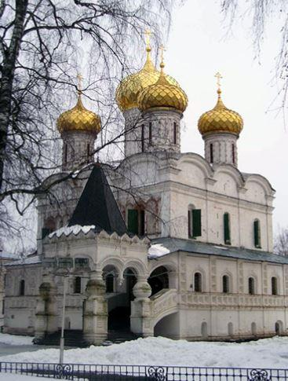Analysons le Monastère maintenant du point de vue architectonique et artistique. Le lieu sacré a une magnifique entrée principale sur la rive du fleuve. Les appartements privés où avaient vécu les premiers Romanov furent restaurés par Alexandre II.
Il fut préservé des usurpateurs bolcheviques et dans les années 90, les autorités russes, comme ils l’ont déjà fait avec les autres Monastères, l’ont restitué aux autorités de l’Église Orthodoxe. Les cinq coupoles dorées de la Cathédrale de la très Sainte Trinité enrichissent le complexe monastique.
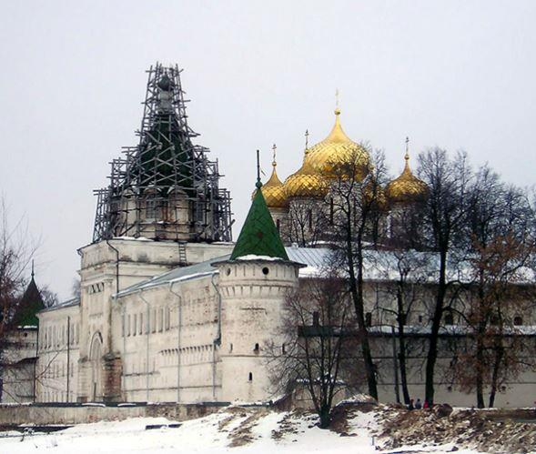La Cathédrale avait été construite à l’origine en pierre avec l’aide de Godounov. Vers la moitié du XVIIème siècle la Cathédrale fut détruite par une explosion due à de la poudre à canon. L’Église fut reconstruite en 1652, À l’extérieur on peut observer certains détails architectoniques et décoratifs exceptionnels : la majestueuse entrée principale, les décorations en terre cuite des fenêtres, les arcades aveugles le long des murs.
Une petite Église fut détruite pendant la domination soviétique et il y a actuellement des projets pour la reconstruire et la consacrer aux Saints Martyrs de la famille Romanov.
Dès 1958, à l’intérieur du Monastère Ipatiev, a été créé un Musée tout à fait unique, à ciel ouvert, relatif à la typique architecture russe en bois. Le Musée existe encore dans une zone adjacente au Monastère. Il a été ultérieurement enrichi avec des pièces de grande valeur. C’est un Musée-symbole de l’identité russe.
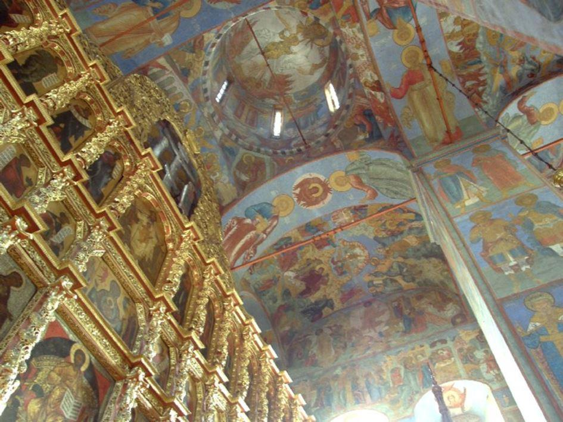À l’intérieur, la Cathédrale est un vrai joyau de la peinture. Chaque colonne, chaque mur, les plafonds, tout est couvert de très belles fresques, œuvres de Guri Nikita et Sila Sarin. Les fresques sont exécutées dans la plus haute tradition de l’antique art russe. Elles unissent l’esprit épique à une profonde interprétation des récits bibliques.
Sur les murs nous trouvons l’inscription des maîtres qui décorèrent les intérieurs :
« Nous avons exécuté ces fresques pour la jouissance spirituelle de tous les peuples de tous les temps »
D.A.R.
Extrait de livre « Monastères Russes et Saints Romanov » écrit par Daniela Asaro Romanoff


Partager cette page